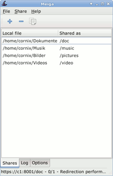
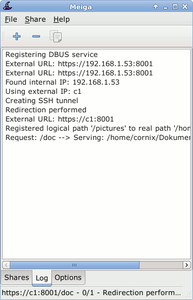
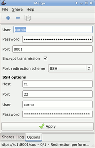
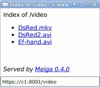

Meiga
Dieser Artikel wurde für die folgenden Ubuntu-Versionen getestet:
Ubuntu 14.04 Trusty Tahr
Artikel für fortgeschrittene Anwender
Dieser Artikel erfordert mehr Erfahrung im Umgang mit Linux und ist daher nur für fortgeschrittene Benutzer gedacht.
Zum Verständnis dieses Artikels sind folgende Seiten hilfreich:
Meiga  ist ein Programm auf Basis von GTK+ zum einfachen Freigeben von Verzeichnissen über das Web. Über einen UPnP-fähigen Router, durch einen SSH-Tunnel oder mittels gewöhnlicher Portweiterleitung stellt Meiga Ordner als Webseiten und RSS-Feeds bereit.
ist ein Programm auf Basis von GTK+ zum einfachen Freigeben von Verzeichnissen über das Web. Über einen UPnP-fähigen Router, durch einen SSH-Tunnel oder mittels gewöhnlicher Portweiterleitung stellt Meiga Ordner als Webseiten und RSS-Feeds bereit.
Anders als gnome-user-share benötigt Meiga keinen zusätzlichen Webserver, sondern bietet dank der verwendeten Bibliothek LipSoup selbst die benötigte Infrastruktur. Der Zugriff kann dabei mit einem Passwort geschützt werden. Ebenso steht TLS-Verschlüsselung zur Verfügung.
Installation¶
Meiga kann noch nicht über die offiziellen Paketquellen installiert werden (401173).
PPA¶
Der Entwickler Enrique Ocaña González lädt über sein "Personal Package Archiv" (PPA) [1] zum Testen ein:
Adresszeile zum Hinzufügen des PPAs:
ppa:eocanha/meiga
Hinweis!
Zusätzliche Fremdquellen können das System gefährden.
Ein PPA unterstützt nicht zwangsläufig alle Ubuntu-Versionen. Weitere Informationen sind der  PPA-Beschreibung des Eigentümers/Teams eocanha zu entnehmen.
PPA-Beschreibung des Eigentümers/Teams eocanha zu entnehmen.
Damit Pakete aus dem PPA genutzt werden können, müssen die Paketquellen neu eingelesen werden.
Nach dem Aktualisieren der Paketquellen kann folgendes Paket installiert [2] werden:
meiga (ppa)
 mit apturl
mit apturl
Paketliste zum Kopieren:
sudo apt-get install meiga
sudo aptitude install meiga
Konfiguration¶
Anschließend kann das Programm bei Ubuntu-Varianten mit einem Anwendungsmenü über "Internet -> Meiga" oder über den Befehl meiga gestartet werden.
Bei einem UPnP-fähigen Router müssen ggf. Einstellungen vorgenommen werden, um die Änderung der Sicherheitseinstellungen mittels UPnP zu gestatten. Da dies ein erhebliches Sicherheitsrisiko darstellt, sollte davon Abstand genommen werden.
Alternativ zur UPnP-Variante kann eine Portweiterleitung (in der Voreinstellung für den Port 8001) angelegt werden. Zusätzlich kann ein SSH-Tunnel genutzt werden. Aus dem gewählten Weg ergeben sich die Einstellungen für die "Options" von Meiga. Dort ist zusätzlich eine Variante für FON auswählbar.
Meiga "vergisst" alle Verbindungsoptionen, insbesondere Passwörter (die auch temporär nie im Klartext gespeichert werden). Dies ist im frühen Entwicklungsstadium von Meiga kein Fehler, sondern ein Sicherheitsmerkmal.
Bedienung¶
Das Hauptfenster unterteilt sich in drei Reiter:
Unter "Shares" werden die lokalen Verzeichnisse und ihre Freigabe-Namen verwaltet.
Das "Log" zeigt alle Programm-Aktivitäten, auch eingehende Verbindungen.
Im Reiter "Options" werden die grundlegenden Verbindungseinstellungen, Zugriffsschutz und Verschlüsselung festgelegt.
|  |
| Freigaben |
|  |
| Protokoll |
|  |
| Einstellungen |
| Werkzeuge | ||
| Symbol | Aktion | Beschreibung |
 | "Add" | Hinzufügen - öffnet den Dialog zum Hinzufügen einer Freigabe. Verzeichnisse werden rekursiv, das heißt mit Unterverzeichnissen freigegeben. |
 | "Remove" | Entfernen - entfernt eine in der Liste markierte Freigabe. |
| "Copy invitation" | Einladung kopieren - kopiert den vollständigen Link (URL) zur obersten Freigabe in der Liste in die Zwischenablage. | |
Beim Schließen des Fensters wird Meiga in die Benachrichtigungsfläche des Panel (System-Tray) minimiert. Zum Beenden muss "File -> Quit" aus der Menüleiste des Programms gewählt werden. Mit Rechtsklick  auf das Tray-Icon öffnet sich ein Kontextmenü, das ebenfalls den Eintrag "Quit" beherbergt.
auf das Tray-Icon öffnet sich ein Kontextmenü, das ebenfalls den Eintrag "Quit" beherbergt.
Zugriff¶
Webbrowser¶
Die Adresszeile unter der Meiga mit einem Webbrowser aus dem lokalen Netzwerk oder dem Internet erreicht werden kann, hängt von den eigenen Einstellungen, insbesondere von der eigenen IP-Adresse oder dem Rechner- und Domainnamen ab.
|  |
| Anzeige im Browser |
Einige Beispiele zur Verdeutlichung:
http://192.168.42.2:8001/Freigabehttps://SERVERNAME:8001/SSL-Freigabe
https://DYN-IP-ADRESSE:8001/SSL-Freigabe
RSS-Feed¶
Der RSS-Feed für Feedreader ergibt sich, wenn man der Freigabe rss/ voranstellt.
http://192.168.42.2:8001/rss/Freigabe
Links¶
Für den Umgang mit dem Quellcode
sind folgende Artikel hilfreich:Hintergrundwissen für die Meiga Connection Tests
bieten diese Artikel:GUPnP Tools - Status von UPnP-Geräten abfragen

- Erstellt mit Inyoka
-
 2004 – 2017 ubuntuusers.de • Einige Rechte vorbehalten
2004 – 2017 ubuntuusers.de • Einige Rechte vorbehalten
Lizenz • Kontakt • Datenschutz • Impressum • Serverstatus -
Serverhousing gespendet von